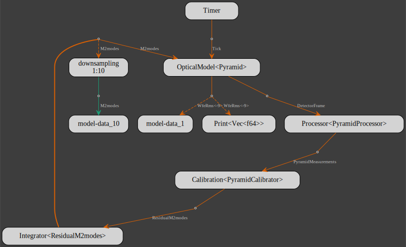

Complete model
To compute the pyramid reconstructor, a feature needs to be added to the gmt_dos-clients_crseo crate:
cargo add gmt_dos-clients_crseo --features faer
The complete closed-loop NGAO model is given below:
use gmt_dos_actors::actorscript;
use gmt_dos_clients::{print::Print, Integrator, Tick, Timer};
use gmt_dos_clients_crseo::{
crseo::{
wavefrontsensor::{LensletArray, Pyramid},
FromBuilder, Gmt,
},
Calibration, DetectorFrame, OpticalModel, Processor, PyramidCalibrator, PyramidMeasurements,
ResidualM2modes,
};
use gmt_dos_clients_io::optics::{M2modes, Wavefront, WfeRms};
#[tokio::main]
async fn main() -> anyhow::Result<()> {
let n_lenslet: usize = 92;
let pym = Pyramid::builder()
.lenslet_array(LensletArray {
n_side_lenslet: n_lenslet,
n_px_lenslet: 10,
d: 0f64,
})
.modulation(2., 64);
let processor: Processor<_> = Processor::try_from(&pym)?;
let (m2_modes, n_mode) = ("ASM_DDKLs_S7OC04184_675kls", 66);
let calibrator: Calibration<PyramidCalibrator> = {
let filename = format! {"pym-{m2_modes}-{n_mode}.bin"};
if let Ok(pymtor) = PyramidCalibrator::try_from(filename.as_str()) {
pymtor
} else {
let mut pymtor = PyramidCalibrator::builder(pym.clone(), m2_modes, n_mode)
.n_thread(7)
.build()?;
pymtor.h00_estimator()?;
pymtor.save(filename)?
}
.into()
};
let optical_model = OpticalModel::<Pyramid>::builder()
.gmt(Gmt::builder().m2(m2_modes, n_mode))
.sensor(pym)
.atmosphere(Default::default())
.build()?;
let metronome: Timer = Timer::new(100);
let prt = Print::default();
let pym_ctrl = Integrator::<ResidualM2modes>::new(n_mode * 7).gain(0.5);
actorscript!(
1: metronome[Tick] -> optical_model[WfeRms<-9>]$.. -> prt
1: optical_model[DetectorFrame]
-> processor[PyramidMeasurements]
-> calibrator[ResidualM2modes]
-> pym_ctrl[M2modes]!
-> optical_model
10: pym_ctrl[M2modes]!${n_mode*7}
);
let metronome: Timer = Timer::new(0);
actorscript!(
#[model(name=wavefront)]
1: metronome[Tick] -> optical_model[Wavefront]!$
);
Ok(())
}The model flowchart: 